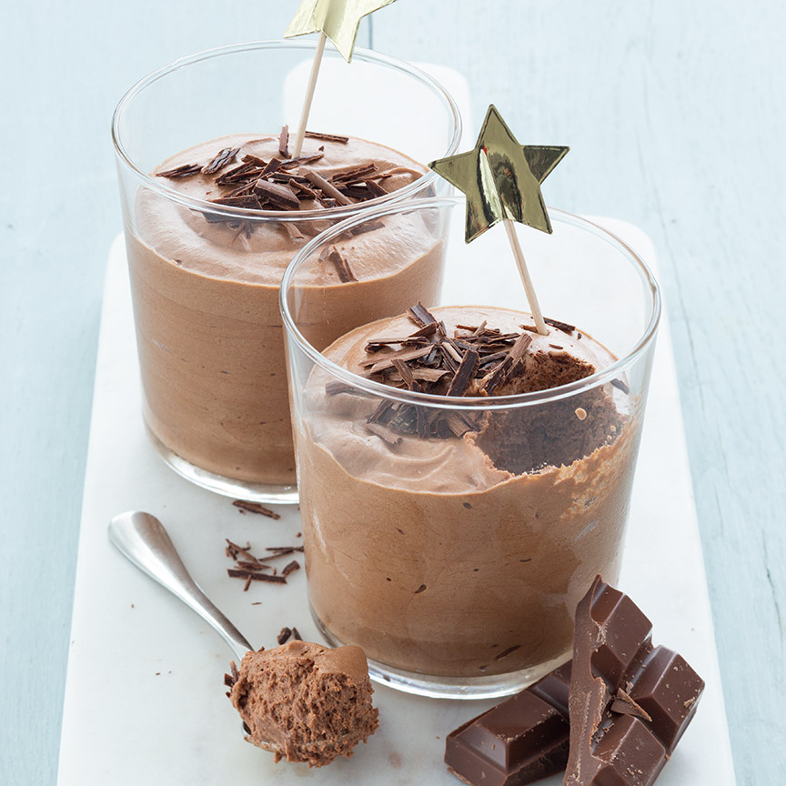

Makkelijke chocolade mousse
Voor dit makkelijke basisrecept voor luchtige chocolademousse heb je maar 4 ingrediënten nodig.
Ingrediënten
- 250 gr pure chocolade
- 3 eiwitten
- 75 gr suiker
- 250 gr slagroom
Bereidingswijze
- Smelt de pure en melkchocolade au bain marie in een kom boven een pan met heet water.
- Klop ondertussen de eiwitten stijf in een vetvrije kom.
- Doe de suiker er beetje bij beetje bij tijdens het mixen.
- Klop in een andere kom de slagroom stijf.
- Schep de gesmolten chocolade voorzichtig door de slagroom, en als deze is opgenomen spatel je de eiwitten er door.
- Klop niet te lang ander klop je de lucht er uit.
- Verdeel de chocolademousse over 4 glaasjes en laat minimaal 3 uur opstijven in de koelkast.
- Garneer de chocolade mousse met wat geraspte chocolade.

Tip Je kunt deze mousse ook maken met melkchocolade of een combinatie van melk en puur.